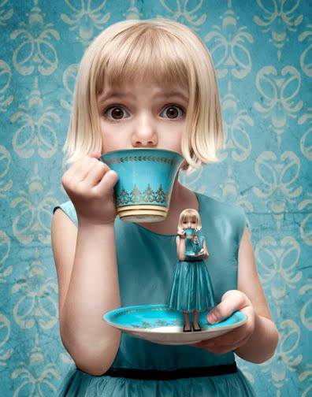

English Traditions
When tea was first introduced in England in the mid 1600’s, the consumption was limited by the high cost and also because of the segregation of tea being served in coffee houses that catered solely to men.
Afternoon tea, a tradition that is thought of being almost synonymous with the word “British,” did not become established until almost 200 years later. In those days, most people only ate two meals: a large breakfast late in the morning and a late dinner around 8 or 9 o’clock in the evening.
Anna, Duchess of Bedford, can be credited for creating the tradition of afternoon tea. She would become hungry during the afternoon, in the long hours between breakfast and dinner. She began asking her servants to bring her some sweets and a cup of tea to ward away her hunger. Eventually she began sharing this custom with her friends, and afternoon tea soon became popular among the aristocratic class. The working class caught on quickly, especially as the afternoon meal was a good opportunity take a much needed break and spend time with friends.

Later on in the 19th century, Queen Victoria’s love for afternoon tea was well known, as were her particular tastes for having a slice of lemon with her tea and her preference for certain cakes and strawberry jam. Afternoon tea also gave way to another favorite tradition: the creation of tea gardens. Tea gardens were quiet places, created specially for taking in afternoon tea, with beautiful flowers, herbs and quaint outdoor furniture.
Tea itself will have a lasting place in English culture. Besides afternoon tea, the English consume large quantities of tea throughout the day, from breakfast to dinner and the last cup of the night. This love for tea is not unique to the English alone, but is found in most citizens of the British Commonwealth, including all of the United Kingdom, Canada, Australia and South Africa.